As an AWS administrator: In the AWS Management Console, open the list of all AWS services by choosing Services, and then locate and choose CloudTrail.
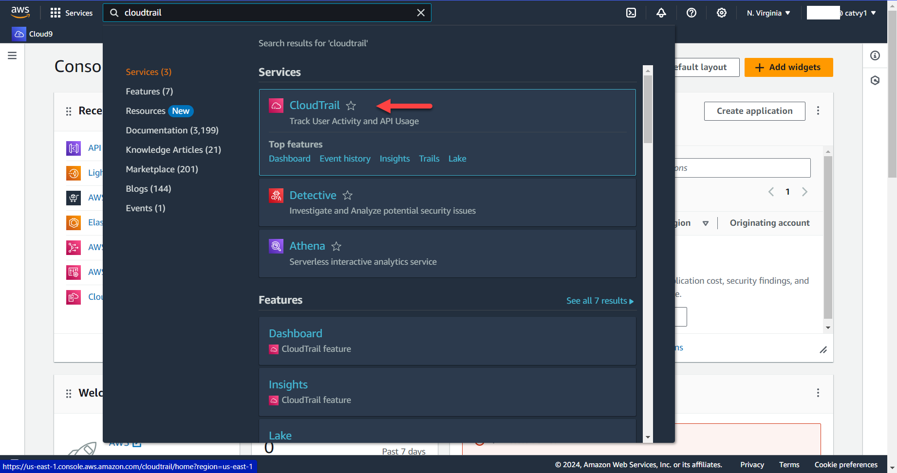
Choose Create trail in the CloudTrail dashboard
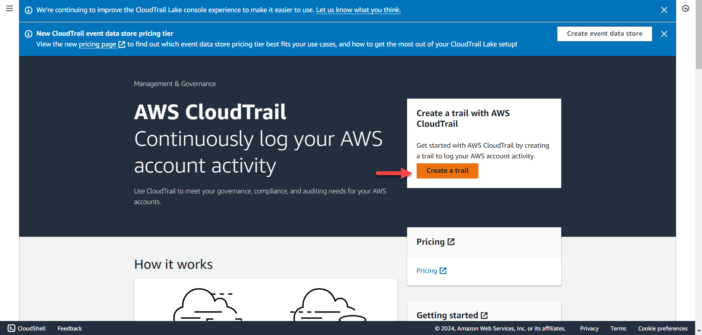
Or choose Trails -> Create Trail
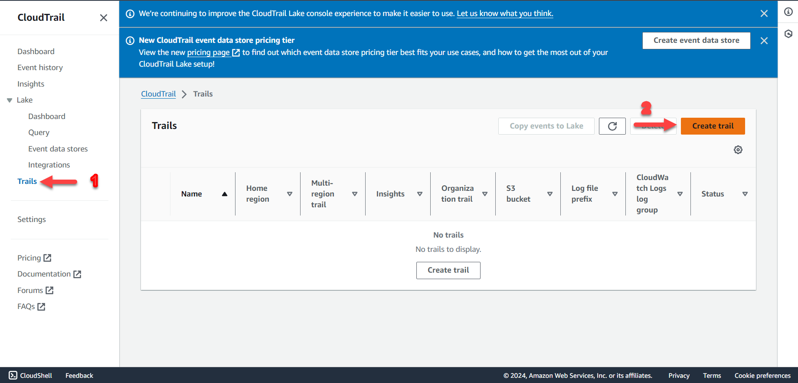
For Trail name, enter default. If that Trail name already exists in your account, enter: lab-data-cloudtrail-default
In the Trail log bucket and folder box, keep the default name suggestion. Note that this S3 bucket is the bucket where CloudTrail will store information. Make sure that you copy this bucket name in Notepad or some places because you will need it when you create the Amazon Athena table in later part.
Clear the Log file SSE-KMS encryption check box.
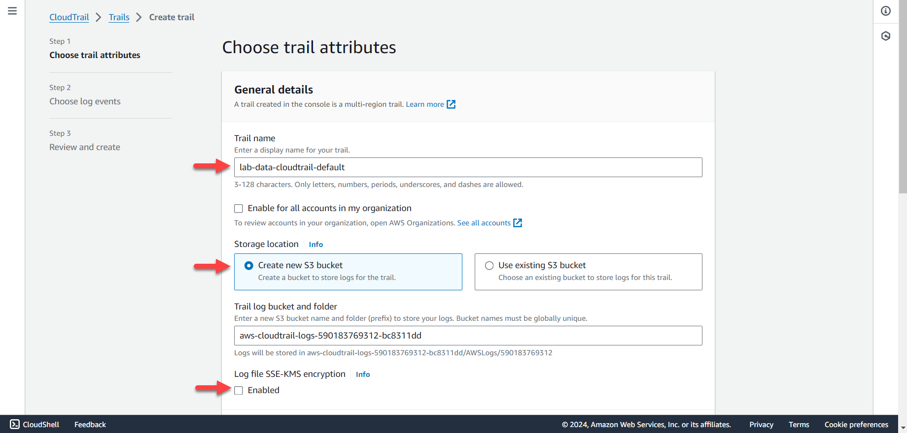
Scroll to the bottom of the page and choose Next.
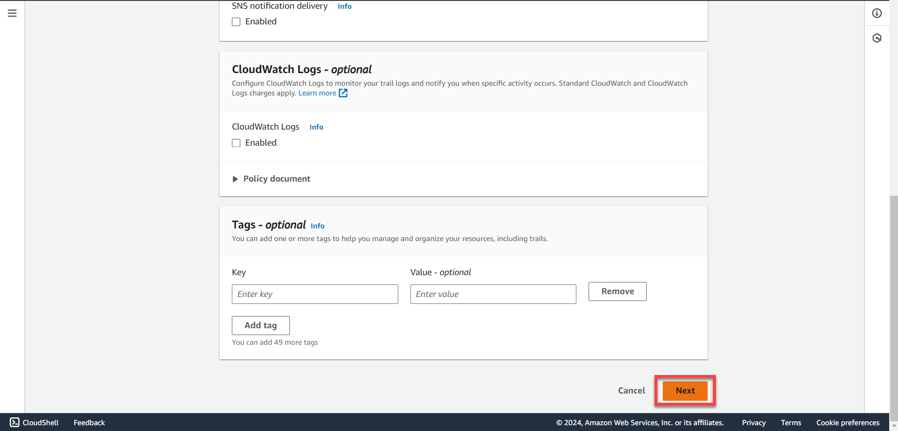
On the next page, select Management events, Data events, and Insights events.
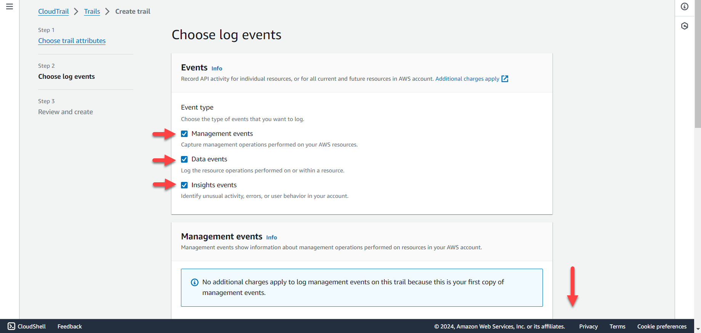
In the Data event, at:
Data event type: choose S3
Log selector template: choose Log all events
Selector name - optional: type lab-data-events log to clarify
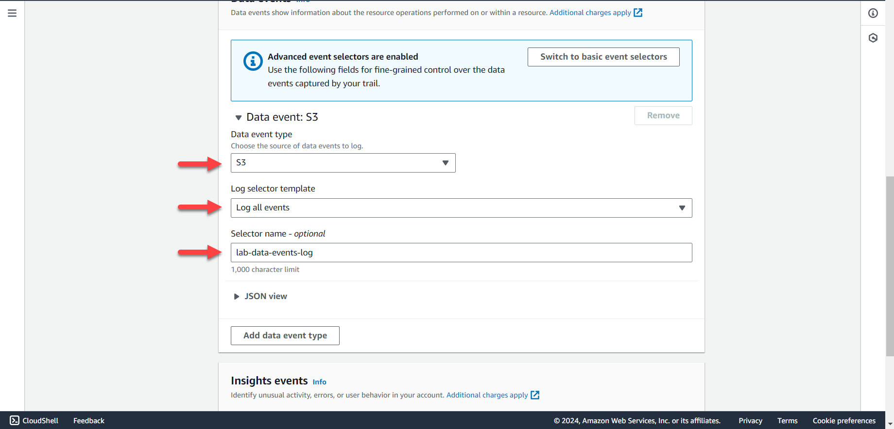
In the Insights events section, tick API call rate and API error rate, then click Next
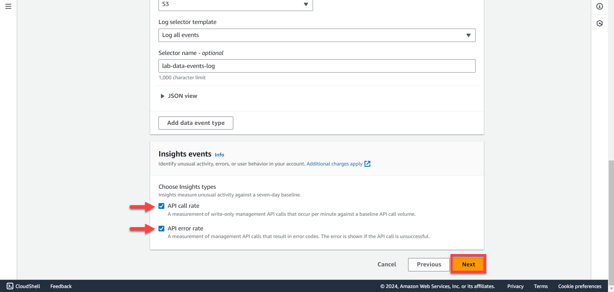
Review and Scroll down
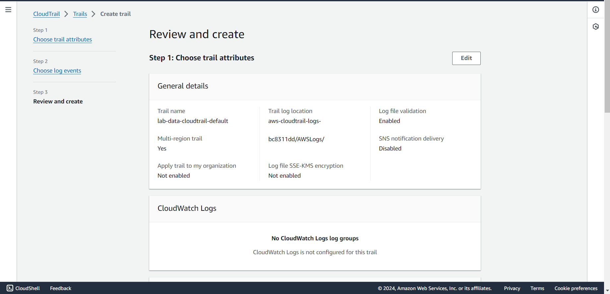
Click Create trail
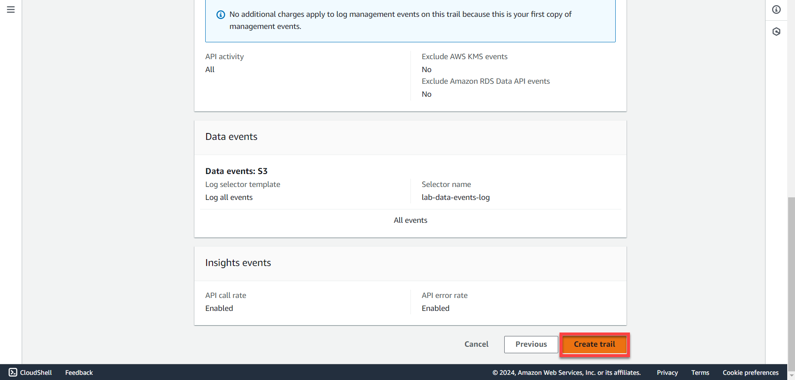
You can click the S3 bucket link to see the objects created automatically by CloudTrail
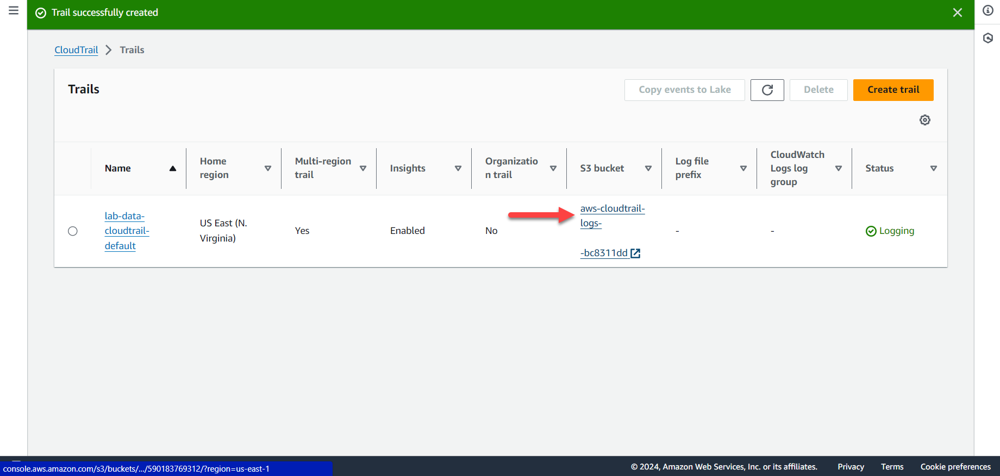
You now have a new CloudTrail dataset that is being created in the designated bucket. You can go to Amazon S3 and inspect how the data structure will look like. As you interact with the AWS Management Console, your user is issuing API calls, which are captured and stored by CloudTrail.
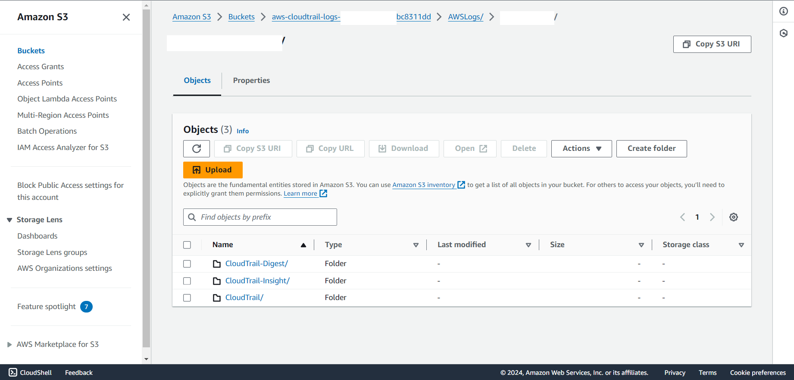